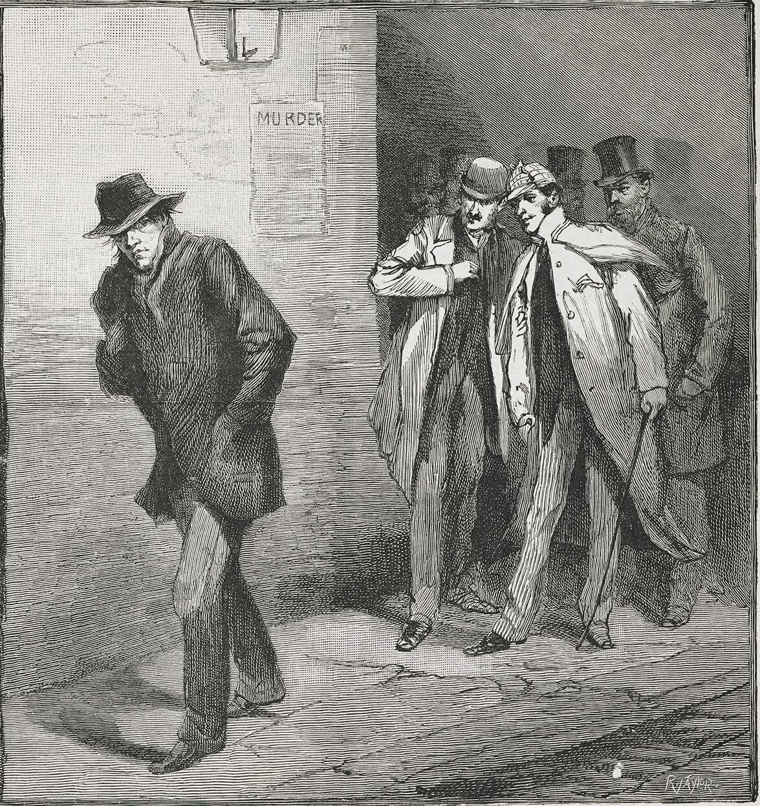

Jack the Ripper: The Mystery of Whitechapel
An unsolved series of murders in Victorian London
In the autumn of 1888, a series of brutal murders took place in Whitechapel, a crowded district in London’s East End. Poverty, insecure housing, and overcrowded streets shaped life there. Five women—Mary Ann Nichols, Annie Chapman, Elizabeth Stride, Catherine Eddowes, and Mary Jane Kelly—are commonly known as the “canonical five,” although the exact limits of the case remain debated.
The attacks were not a shooting in which victims were gunned down; the canonical victims were killed with a knife. Police interviewed residents, examined the scenes, and followed many leads. The investigation was limited by the forensic methods of the time, the lack of reliable identification evidence, and the volume of rumors and false claims that surrounded the case.
Several people were considered as possible suspects, but no suspect was conclusively identified. The case produced no arrest: no one was arrested or charged for the canonical murders. There was no criminal trial or court verdict declaring anyone guilty or innocent, and no sentence of imprisonment. The surviving evidence does not support a definitive answer about the killer’s identity.
Terms such as kidnapping, robbery, shoplifting, theft, and vandalism describe different offenses; they are not established explanations for the canonical murders. The case shaped public fear, press coverage, and debates about policing and poverty. More than a century later, its unresolved questions still attract attention—but a compelling theory is not the same as proof.
Crime vocabulary / simple definitions
Arrest: to take a person into police custody, or the act of doing so.
Charged: formally accused of a crime.
Evidence: information or objects used to find out what happened.
Guilty: responsible for a crime under a court's decision.
Gunned down: shot and killed with a firearm.
Innocent: not responsible for the crime in question.
Imprisonment: the punishment of being kept in prison.
Kidnapping: taking and holding a person illegally.
Murder: the unlawful killing of a person.
Robbery: taking property from a person by force or threat.
Sentence: the punishment given by a court.
Shoplifting: stealing goods from a shop.
Shooting: an incident in which a firearm is discharged at someone or something.
Theft: taking something that belongs to another person without permission.
Trial: a court process for deciding a person's guilt or innocence.
Vandalism: deliberate damage to property.
Verdict: a court's decision about whether a person is guilty.